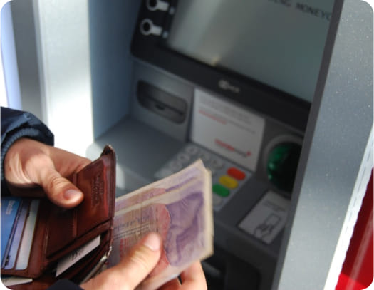

Deposits
Globalfx500 has made it easy for you to fund your trading
account with a method that is safe and convenient for you. The
process is simple and straightforward, making it easy for you
to quickly get started with your trading activities.
Globalfx500 utilizes top security protocols to ensure that you
never have to worry about the safety and security of any funds
held in your account. In addition to holding all client funds
in tier-1 segregated bank accounts, Globalfx500 also applies
industry-best encryption technologies to ensure that your
personal and financial information is not put at any risk
whatsoever.
What is the Deposit Processat Globalfx500
Here are the steps to follow to fund your Globalfx500 trading account:
- Login into your Globalfx500 trading account
- Click on "Deposit"
- Select a payment method that you prefer
- Follow the prompts to complete the deposit process using your preferred payment method
- Your deposit will reflect as soon as the process is successfully completed
-
Credit/debit cards
Credit and debit cards are safe and convenient payment methods for many people. In addition to security, some come with related rewards for their users. At Globalfx500, we allow our clients to fund their trading accounts using popular debit/credit cards such as Visa, MasterCard, and Maestro.
-
eWallets
EWallets have revolutionized the online payments scene. EWallet users are able to make quick payments with just a simple click. They also boast strong security features that are continuously upgraded. Globalfx500 provides a good selection of eWallets to allow you to fund your account cheaply and quickly as possible.
-
International Bank Wire
While many clients prefer eWallets and card payments, there are some who can only access international bank wire. Another reason to use bank wire is to take advantage of its high security protocols. In most cases, an international bank wire is routed by at least 3 banks, which may be located in different jurisdictions, using different major local currencies. We still offer this option to those clients who find it convenient, but please remember that it may take up to 7 days for the funds to reflect in your trading account.
-

Local Bank Wire
Globalfx500 also accepts deposits via local bank wire. This is a cheaper alternative to international bank wire because it is peer-to-peer (The process uses people’s or institutions’ bank accounts directly). However, some banks may lack a current working relationship and may have to use intermediaries. It typically takes 3-5 business days for the funds to reflect in your trading account if you use local bank wire.
Globalfx500
We understand that our clients have different preferred payment methods. Browse through our various supported methods by clicking on the ‘Deposit’ button when you log into your Globalfx500 trading account.
Withdrawals
We have deliberately streamlined the withdrawal process at
Globalfx500 to make it quick and easy for our clients to enjoy
their profits. You can withdraw your funds using all the
available deposit payment methods.
Globalfx500 will
facilitate safe withdrawals to your preferred payment methods.
We do not charge any withdrawal fees, so you will receive 100%
of the funds that you request to be withdrawn from your trading
account. However, please note that depending on your preferred
method, there may be applicable fees levied by your payment
processor. Please make sure to check this information directly
with your financial institution.
What is the Withdrawal Process at Globalfx500
At Globalfx500, the withdrawal process is smooth and hassle-free. Once you have completed all the relevant verification requirements, simply follow the below steps and wait to receive your money
-
1
Log in to your Globalfx500 trading account
-
2
Click ‘Withdraw’ and fill out the withdrawal request form
-
3
Submit the withdrawal form to the email provided (support@orcal-group.com) and wait for your funds to reflect on your preferred payment method.
Please note that we strive to process all withdrawal requests within a reasonable time. Depending on your preferred payment method, your request may take as short as 24 hours to as long as 7 days to be processed. Globalfx500 does not charge any fees for deposits or withdrawals. You may, however, incur fees, such as forex or other related charges levied by your payment processor. Most of these fees are generally negligible, but it is important to confirm with your payment processor what their charges
Account Verification and Security
Globalfx500 is a reputable international broker that is bound by
international protocols on KYC (know-your-customer) and anti-money
laundering guidelines. To comply, we need to perform identity
verification on all our users. This process involves requesting
our clients to upload certain verification documents.
We have
implemented top security protocols to ensure that no data about
our clients will ever be compromised in any way.
The documents required for the verification process are:
- водительские права
- международное удостоверение личности (загранпаспорт);
- внутренний паспорт.
Our website has been optimized to facilitate a quick and seamless
verification process. Should you find any difficulties completing
the verification requirements, simply contact our support team who
will help you with the process as fast as possible. Our dedicated
support team can be contacted via Live Chat, telephone, or
email
(support@orcalgroup.com).
-
Proof of Identification (POI)
A valid POI document is a government-issued identification document that shows your face, full names, date of birth, date of issue (or expiry), your signature, and any other relevant data in your jurisdiction.
The document must be a clear coloured copy that is clear and legible. Please ensure that your full name, the date of issuance, and the expiration date are clearly visibleAcceptable POI documents include:
- Driver’s license
- National Identity Card
- Passport
-
Proof of Residence (POR)
A valid POR is a document issued by relevant authorities or institutions, clearly showing your full name and address that match your account registration details.
Acceptable PORThe document must be clear and legible, and not dated more than 6 months.Acceptable POR documents include:
- Bank Statement
- Utility Bills (gas, electricity, telephone, internet)
- Lease Agreement
- Mortgage Contract
- Local Authority Bills
Credit or Debit Card Verification
If you wish to withdraw via a credit or debit card, additional verification may be required. To verify your card, please submit a clear coloured photo or scan that shows the following:
- Full Name
- Expiry Date
- First 5 digits and Last 4 digits (make sure that the middle 7 numbers are obscured as well as the CVV number)
- Your Signature that is consistent with previously uploaded documents
Please note that we strive to process all withdrawal requests within a reasonable time. Depending on your preferred payment method, your request may take as short as 24 hours to as long as 7 days to be processed. Globalfx500 does not charge any fees for deposits or withdrawals. You may, however, incur fees, such as forex or other related charges levied by your payment processor. Most of these fees are generally negligible, but it is important to confirm with your payment processor what their charges
Bank Transfer
If your deposit into your Globalfx500 trading account was done via bank transfer, the next withdrawal will also be processed via the same method. To verify your bank account, please send a clear and legible image that captures your original deposit transaction.